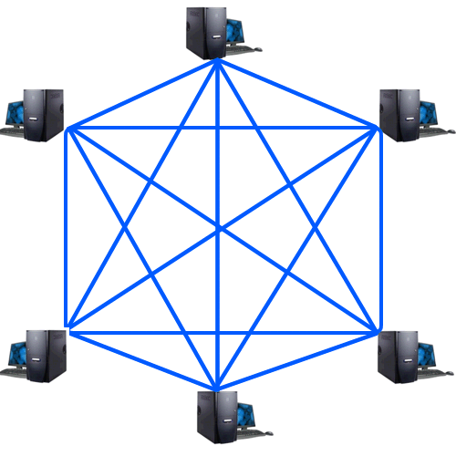

Mesh-Topologie

von Julian Schwertl und Julius Dehner
Gliederung
- Was ist die Mesh Topologie?
- Verwendungszwecke
- Mesh-Typen
- Vor- und Nachteile
Was ist die Mesh Topologie?
- Netzwerk mit zwei oder mehr Pfaden zu einem Gerät → Redundanz
- Nachrichten haben eine TTL
Flooding
- Geräte müssen eigene Daten erfassen
- Gleichzeitig beschäftigt mit Weiterleitung der Daten anderer Geräte
- Ergo ist jedes Gerät Empfänger und Sender zugleich
Routing
- Verteilung geschieht durch Routing-Tabellen (kürzester Pfad)
- Bei Ausfall einer Netzwerkeinheit wird ein neuer schnellster Weg gesucht